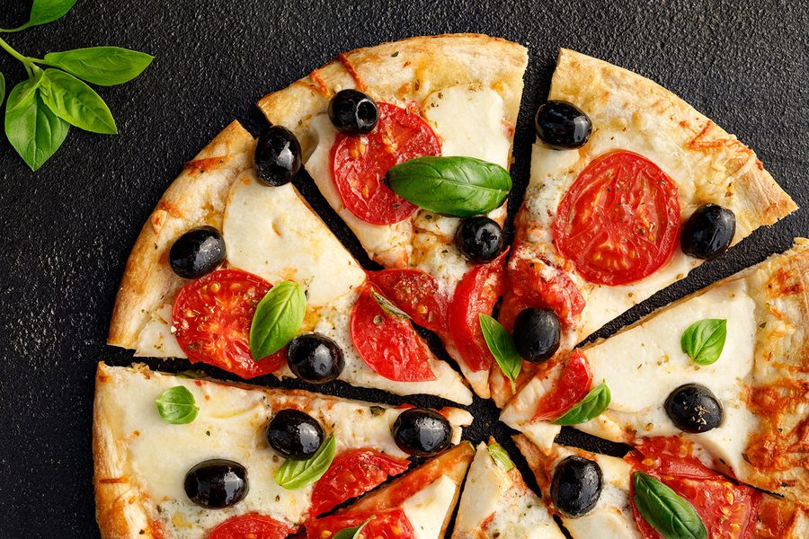

Nonnas Pizzateig

ruhezeit 1h
Schwerigkeit: Mittel
| Menge | Zutat | Hinweis |
|---|---|---|
| 500g | Mehl | Typ 00 am besten |
| 325ml | Wasser | Lauwarm |
| 5g | hefe | |
| 10g | Salz | |
| 1EL | Olivenöl |
Zubereitung
- Hefe in warmem Wasser auflösen
- Mehl, Salz und Olivenöl in eine Schüssel geben
- Die Hefe-Lösung zum Teig hinzufügen
- Den Teig knechten, bis er glatt und elastisch ist
- Den Teig in 4 gleich große Bällchen teilen
- Den Teig in einer gefetteten Schüssel ruhen lassen, bis er sich verdoppelt hat
Nonnas Tipp: der Teig braucht zeit, nich hefe. Um so länger er ruht, desto besser schmeckt er.